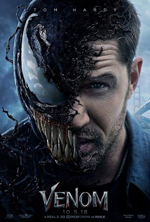

Find Your Next Favorite Movie
Explore our vast library of movies and TV shows.
Get StartedFeatured Movies
-

Before dawn
Based on real life war diaries, Before Dawn is an epic retelling of one of Australia's biggest victories during WW1. Jim Collins, a young man from the outback, leaves his family-run sheep station to join the ANZAC and fight on the western front with hopes of making a difference.
-

Venom
Summaries. A failed reporter is bonded to an alien entity, one of many symbiotes who have invaded Earth. But the being takes a liking to Earth and decides to protect it. After a faulty interview with the Life Foundation ruins his career, former reporter Eddie Brock's life is in pieces.
-

Transformer 4
From director Michael Bay and executive producer Steven Spielberg comes a thrilling battle between the heroic Autobots and the evil Decepticons. When their epic struggle comes to Earth, all that stands between the Decepticons and ultimate power is a clue held by young Sam Witwicky (Shia LaBeouf).
-

After Earth
The film was loosely based on an original story idea by Will Smith about a father-and-son trip in the wilderness before it was eventually reworked into a sci-fi setting, taking place 1,000 years in the future where humans evacuated Earth to another planet due to a massive environmental catastrophe.
Latest Releases
-

Civil war
civil war, a violent conflict between a state and one or more organized non-state actors in the state's territory.
-

Flow
Premise. A cat escapes a flood that destroyed the world on a boat filled with animals of other species. He must work together with these unlikely companions to survive their new environment.
-

Dragon keeper
The storyline is about a slave girl called Ping (Mayalinee Griffiths), who dreams about meeting dragons. Her dream comes true, but one of the magical creatures dies and she goes on a quest to save the dragons and hatch the last imperial dragons' egg.
-

Morco
Based on true events, Marco explores the story of a concentration camp deportee who never existed. Enric Marco, an immensely charismatic man who, for years, was able to maintain, before public opinion and his own family, a deeply complex lie: that he had been a prisoner in a Nazi concentration camp.
-

Deadpool vs Wolverine
In the film, Deadpool learns that the Time Variance Authority is set to destroy his home universe and works with a reluctant Wolverine from another universe to stop them.
-

We go in At Dawm.
A WW2 espionage thriller based on a true story and set during the build-up to Operation Overlord. Six days before D-DAY, Victor Lawrence, a lieutenant, and key figure in the British Air Force, is shot down over France. Captured by the Nazis, he is detained in a holding camp under a false identity.